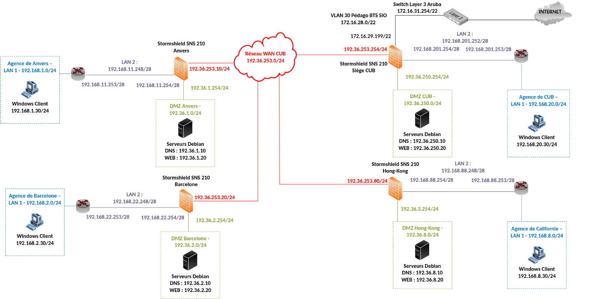
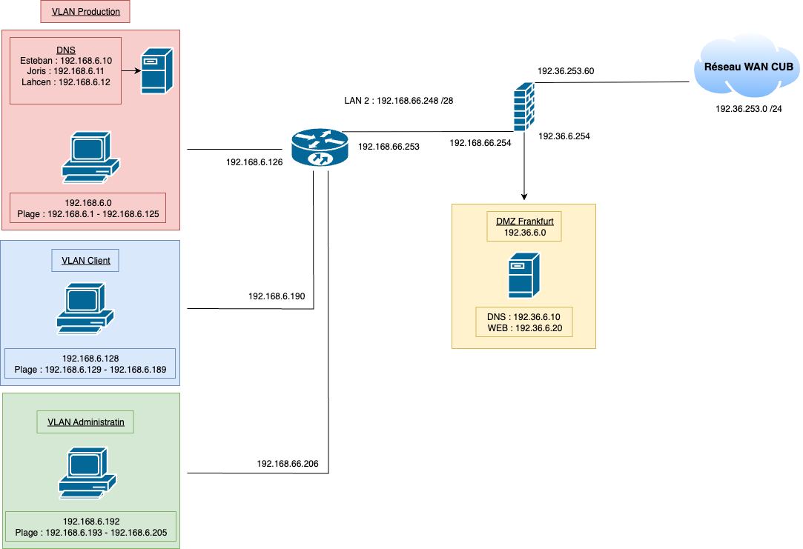
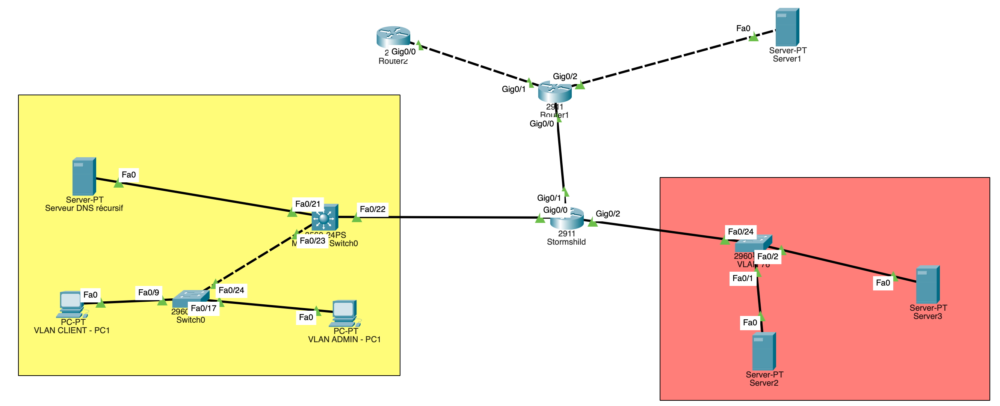
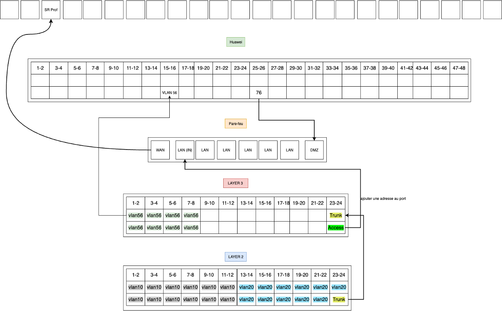
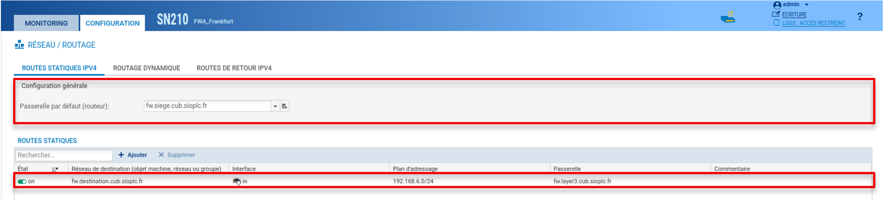

Activité 0 : Mise en place de l’infrastructure réseau des agences de l’entreprise CUB
Prérequis

Ducumentation en ligne : https://cubdocumentation.sioplc.fr
Adressage
| Puissance de 2 | Valeur |
|---|---|
| 2⁰ | 1 |
| 2¹ | 2 |
| 2² | 4 |
| 2³ | 8 |
| 2⁴ | 16 |
| 2⁵ | 32 |
| 2⁶ | 64 |
| 2⁷ | 128 |
Adresse réseau : 192.168.6.0/24
| Service | Nombre d’hôtes | Adresse réseau | Masque de sous-réseau | Adresse de diffusion | Description VLAN |
|---|---|---|---|---|---|
| Production | 120 | 192.168.6.0 | 255.255.255.128 | 192.168.6.127 | VLAN 56 |
| Client 1 | 32 | 192.168.6.128 | 255.255.255.192 | 192.168.6.191 | VLAN 10 |
| Administration systèmes et réseaux | 6 | 192.168.6.192 | 255.255.255.240 | 192.168.6.207 | VLAN 20 |
N°1 sous-réseau Production = 126 hôtes → 2⁷ → /25
Production = 192.168.6.0/24 → 255.255.255.128 → x.x.x.1000 0000
Diffusion : 1100 0000 . 1010 1000 . 0000 0110 . 0111 1111
➡️ 192.168.6.127
Schéma logique – Agence Frankfur

Packet tracert - Agence Frankfurt

Plan de câblage

FW
| Destination | Masque | Passerelle | Interface | Type |
|---|---|---|---|---|
| 192.36.253.0 | /24 | 192.36.253.60 | 192.36.253.60 | C |
| 192.36.6.0 | /24 | 192.36.6.254 | 192.36.6.254 | C |
| 192.168.66.248 | /28 | 192.168.66.254 | 192.168.66.254 | C |
| 192.168.6.0 | /24 | 192.168.66.253 | 192.168.66.254 | S |
| 0.0.0.0 | /0 | 192.36.253.254 | 192.36.253.60 | S |
LAYER 3
| Destination | Masque | Passerelle | Interface | Type |
|---|---|---|---|---|
| 192.168.6.0 | /25 | 192.168.6.126 | 192.168.6.126 | C |
| 192.168.66.248 | /28 | 192.168.66.253 | 192.168.66.253 | C |
| 192.168.6.128 | /26 | 192.168.6.190 | 192.168.6.190 | C |
| 192.168.6.192 | /28 | 192.168.66.206 | 192.168.66.206 | S |
| 0.0.0.0 | /0 | 192.168.66.254 | 192.168.66.253 | S |
Routage NAT
| Avant translation | Après translation | ||||||
|---|---|---|---|---|---|---|---|
| Ip source | Port Src | IP dst | Port dst | Ip source | Port Src | IP dst | Port dst |
| 192.168.6.0 /24 | * | * | * | 192.36.253.60 /24 | * | * | * |
1. Fichier de configuration des différents équipements
2. Configuration du routage statique
Router(config)#
Router(config)# ip route destination masque passerelle
Exemple :
Pour afficher les routes créer :
3. Configuration du routage NAT
Avant de commencer, activer IP routing
Router(config)#
3.1 Désigner les interfaces Inside et Outside (Interne et Externe)
Router(config)#
Router(config)#
3.2 Définir les adresses locales soumises au NAT dans l'optique de les masquer pour qu'elles puissent avoir accès à l'extérieur et que l'extérieur ne voit que l'adresse du routeur.
Router(config)# : access-list access-list number permit source ip wildcard_mask
Le terme wildcard_mask désigne un masque inversé, pour un masque de sous-réseau de 255.255.255.0 le wildcard mask sera 0.0.0.255.
Exemple :
3.3 Mise en place de la translation LAN vers IP publique
Router (config)# ip nat inside source list numero-acl interface int-publique overload
Exemple :
4. Configuration du pare-feu Stormshield
Se référer à la documentation suivante : https://cubdocumentation.sioplc.fr

Premier encadré : Ceci est la route par défaut calculée auparavant sur la table de routage.
Deuxième encadré : Ceci est l’autre route statique calculée auparavant sur la table de routage.